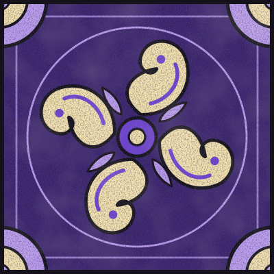
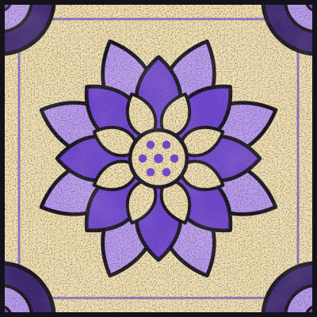
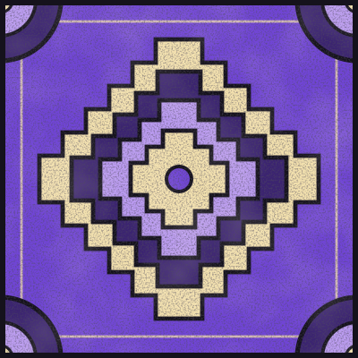

Hi, I am Harini.
Product designer, systems thinker & speculative design researcher.
Work
Product design, research & strategy
-

Willed Departures
A speculative exploration of death, memory and posthumous identity.
View project: Willed Departures -

Monsoon Protocols
Climate alerts designed around how coastal families already read the sky.
View project: Monsoon Protocols -

Ledger of Kin
A service system for money shared across three generations of a household.
View project: Ledger of Kin -

Quiet Machines
Field research on voice assistants in multilingual Tamil homes.
View project: Quiet Machines -

Ritual Interfaces
How ceremony shapes the trust people place in new technology.
View project: Ritual Interfaces
Wander
Experiments, writing & other curiosities
-

Notes from the Threshold
Essays on folklore, futures and everyday speculation.
View project: Notes from the Threshold -

Kolam Algorithms
Generative sketches built from the rules of pulli kolam.
View project: Kolam Algorithms -

Field Guide to 2049
A zine of fictional everyday objects from a near-future Chennai.
View project: Field Guide to 2049 -

Slow Archive
Collecting the objects that outlive the people who kept them.
View project: Slow Archive -

Tile Studies
Drawing Athangudi floors by hand, and the motifs on this site.
View project: Tile Studies